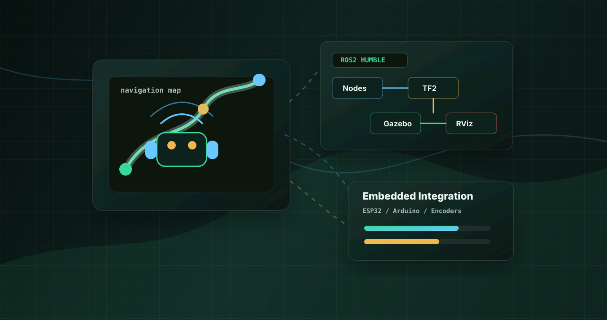

ROS 2 & Simulation
ROS 2 Humble/Jazzy, Gazebo Sim, RViz2, URDF/XACRO, TF2, ROS 2 Launch, ros_gz, robot_state_publisher, joint_state_publisher, and ros2_control.

ROS 2 Robotics Engineer / Autonomous Systems Developer
Developing ROS 2 robot simulation modules for mobile, legged, and aerial robots with autonomous navigation and embedded sensor integration.
Robotics Engineer at Evolve Robotics Lab, Chennai, working with ROS 2 Humble/Jazzy, Gazebo Sim, RViz2, URDF/XACRO, Linux/Ubuntu, SLAM Toolbox, Nav2, OpenCV, and ros2_control.
Who I Am
I work as a Robotics Engineer at Evolve Robotics Lab, where I develop ROS 2-based robotic simulation modules, Gazebo environments, and URDF/XACRO workflows for mobile, legged, and aerial robot development.
My work covers autonomous navigation, LiDAR simulation, SLAM and mapping, localization, Nav2 workflows, TF validation, OpenCV prototyping, robot visualization, and embedded robotics integration in Linux/Ubuntu environments.
Technical Stack
ROS 2 Humble/Jazzy, Gazebo Sim, RViz2, URDF/XACRO, TF2, ROS 2 Launch, ros_gz, robot_state_publisher, joint_state_publisher, and ros2_control.
SLAM Toolbox, 2D LiDAR mapping, localization, Nav2, costmaps, path planning, obstacle avoidance, AMRs, and differential-drive robots.
Drone controller simulation, keyboard-based drone control, gait control, inverse kinematics, and multi-joint legged robot control.
OpenCV, Python, C++, Embedded C, Linux/Ubuntu development environments, and Git/GitHub workflows for robotics software.
ESP32, Arduino, STM32, AVR, PIC, MSP430, encoders, ultrasonic sensors, DC and servo motors, L298N, and PCA9685.
UART, SPI, I2C, PWM, sensor integration, motor control, and embedded hardware workflows connected to practical robot systems.
Learning and prototyping with OpenAI Codex, Claude Code, Cursor, and OpenCode for AI-assisted coding workflows and robotics software exploration.
Development Workflow
Build URDF/XACRO robot structure, joint configurations, and drive mechanisms.
Run Gazebo Sim environments with ros_gz and validate robot motion before hardware testing.
Use RViz2 and TF2 to inspect frames, LiDAR, odometry, sensor data, and robot state.
Connect encoders, ultrasonic sensors, motor control, and ros2_control to robot workflows.
Project Experience
Built and validated a ROS 2 differential-drive mobile robot using URDF/XACRO, Gazebo, RViz2, TF inspection, encoder integration, and autonomous-navigation workflows.
Designed a drone simulation workflow in Gazebo and ROS 2 with keyboard-based control for simulation testing.
Developed a multi-leg robot simulation with gait-control concepts and inverse-kinematics-based leg movement.
Developed an autonomous mobile robot simulation using URDF/XACRO, Gazebo, RViz2, LiDAR, SLAM/mapping, localization, and Nav2 workflows.
Built an autonomous robot using ultrasonic sensors, Arduino control, and differential drive logic for obstacle avoidance behavior.
Developed encoder feedback monitoring and synchronized motor control workflows for mobile robot motion tracking.
Configured Gazebo and RViz environments for robot simulation, visualization, TF inspection, and sensor data validation.
Experience
Evolve Robotics Lab, Chennai
Evolve Robotics Lab, Chennai
Background